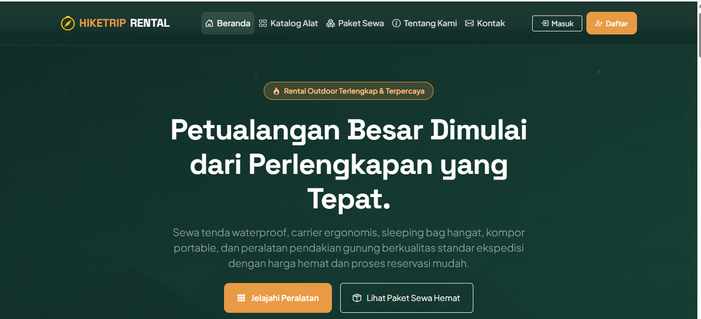

Website Penyewaan Alat Hiking
Aplikasi website penyewaan perlengkapan naik gunung dan aktivitas outdoor (tenda dome, carrier 60L, sleeping bag, kompor). Dilengkapi katalog produk, pemilihan tanggal sewa, dan keranjang pemesanan.
HTML5
CSS3
JavaScript
PHP / MySQL